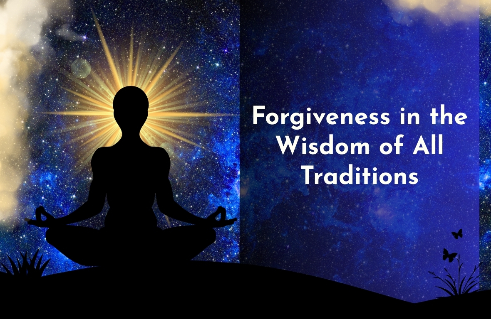

Why Desires Do Not Manifest?
Our desires and visions remain unfulfilled because our bio-magnetic energy is weak. This weakness is caused by stored anger and unresolved emotions—towards family, friends, society, ancestors, and life itself. These emotions create negative energy, blocking inner power and clarity.
The Solution
Forgiveness is the only solution. It cleanses anger, restores bio-magnetic energy, and reopens the path for fulfillment.
The why, when, and how of Forgiveness is taught as a core practice in Narkarma Viruthi, the first-level program of Sittha Viruthi Yoga.
Forgive. Heal energy. Fulfill life.

Forgiveness – The Highest Virtue of the Human Soul Forgiveness is the crown jewel of human virtues. It is not weakness—it is the strength of awakened consciousness. It is not forgetting—it is liberation from the burden of karmic memory. Across civilizations, scriptures, and spiritual lineages, forgiveness has been revered as the foundation of inner freedom and harmonious living. It is the subtle force that heals relationships, purifies the heart, and restores balance within the individual and the collective.
All great spiritual paths speak with one voice when it comes to forgiveness:
- Lord Krishna, in the Bhagavad Gītā, declares kṣamā (forbearance and forgiveness) as a divine quality, urging the seeker to become a personification of forgiveness, free from hatred and retaliation.
- Lord Buddha taught that holding on to anger is like holding a burning coal—it is the one who holds it who suffers. Forgiveness, he taught, dissolves suffering at its root.
- Jesus Christ embodied forgiveness even in the face of crucifixion, teaching humanity to forgive “seventy times seven,” revealing forgiveness as unconditional love in action.
- Prophet Nabi Muhammad (peace be upon him) emphasized forgiveness as a noble act that elevates the soul and draws one closer to divine grace.
- Saints, Siddhars, and enlightened masters across ages have echoed the same truth:
Forgiveness purifies karma and elevates consciousness. Thus, forgiveness is not bound to one religion—it is a universal spiritual law. Forgiveness in the Sittha Viruthi Yoga System Across all religions, ancestral remembrance is sacred. In Sittha Viruthi Yoga, Thithi is practiced as an act of forgiveness, where we ask forgiveness for ancestral karmas, helping their souls find healing, peace, and upliftment. In the Sittha Viruthi Yoga System, forgiveness is not treated merely as a moral idea or emotional release.
It is imparted as a soulful, conscious technique in the first level:
Narkarma Viruthi – The Science of Karmic Cleansing
At this foundational level, seekers are guided to understand that:
- Human suffering is rooted in unresolved karmic impressions (vāsanās)
- Many of these impressions are inherited, ancestral, and unconscious
- Forgiveness is the key that loosens karmic knots, both personal and ancestral
Through deep awareness, guided inner processes, and Siddha wisdom, forgiveness becomes a transformative yogic practice, not just an emotional act.
Forgiveness as Yogic Liberation. Forgiveness frees the heart from resentment. It frees the mind from repetitive suffering. It frees the soul from karmic bondage. In forgiving others, we do not justify actions—we release ourselves. In forgiving ancestors, we do not judge the past—we heal the present and future. This is the sacred understanding imparted in Nar Karma Viruthi: When forgiveness becomes conscious, karma loses its grip. The Call of Sittha Viruthi Yoga Sittha Viruthi Yoga invites the seeker to walk the ancient Siddha path— where forgiveness is not preached, but experienced not discussed, but embodied not symbolic, but transformational Forgiveness is the doorway. Awareness is the path. Liberation is the fruit.